| Poverty (%) | |
|---|---|
| (Intercept) | 16.74* |
| (0.73) | |
| College Degree (%) | -0.23* |
| (0.04) | |
| Num.Obs. | 437 |
| R2 | 0.079 |
| R2 Adj. | 0.077 |
| RMSE | 4.94 |
| * p < 0.05 | |
Today’s Agenda
Ordinary Least Squares (OLS) Regression
- Practice fitting, interpreting and evaluating OLS regressions
Justin Leinaweaver (Spring 2025)
Why use OLS regressions?
Quantifies the relationship between variables
Uses ALL of the data
Makes predictions with estimates of uncertainty
Gives us criteria for evaluating the fit of the line
Future Weeks
- Can be adjusted for confounders (e.g. control variables), nonlinear relationships and different data structures
Assignment For Today
What is the effect of college completion on poverty rates in midwest cities?
Fit the regression
Submit a polished regression table, residuals plot and predictions plot
Answer the question
Evaluate the regression
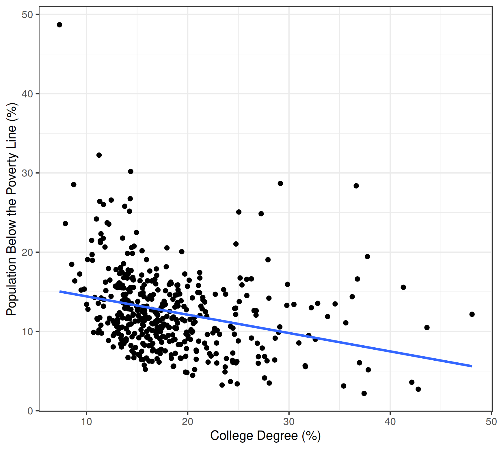
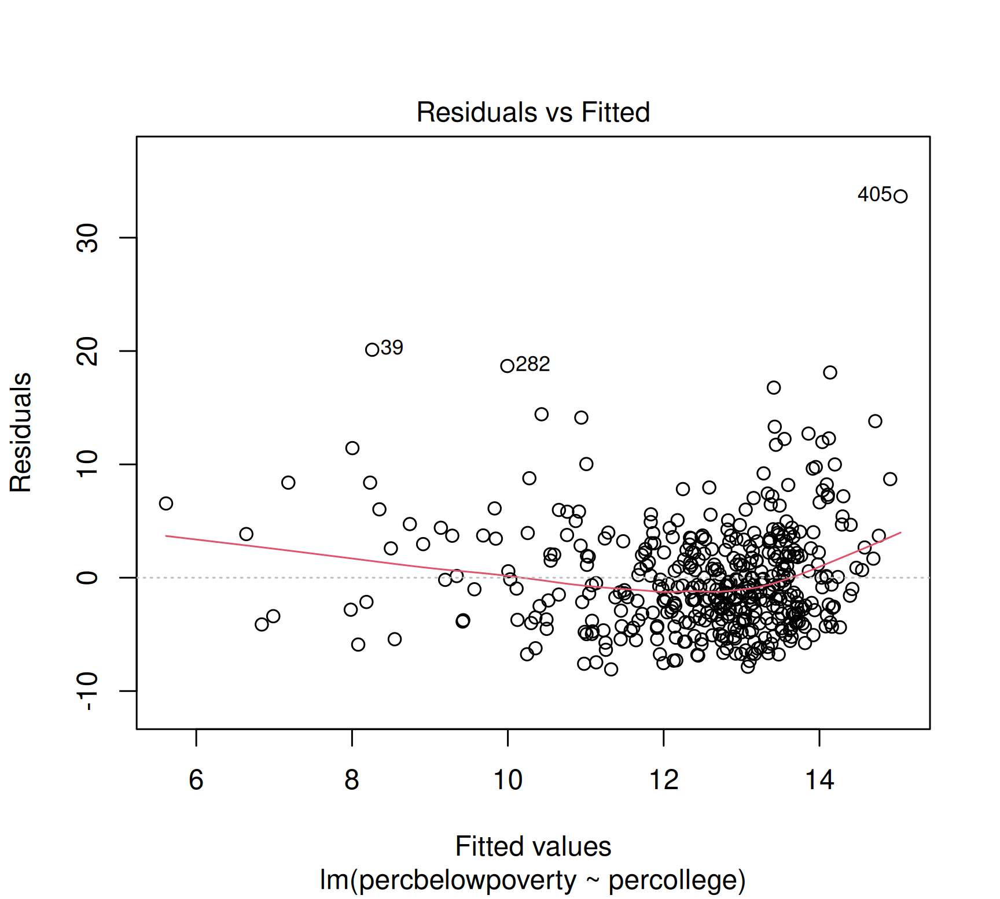
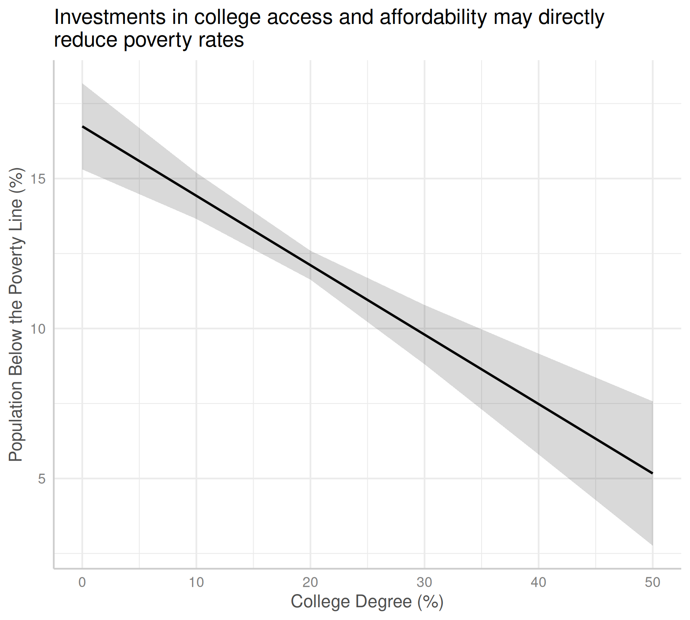
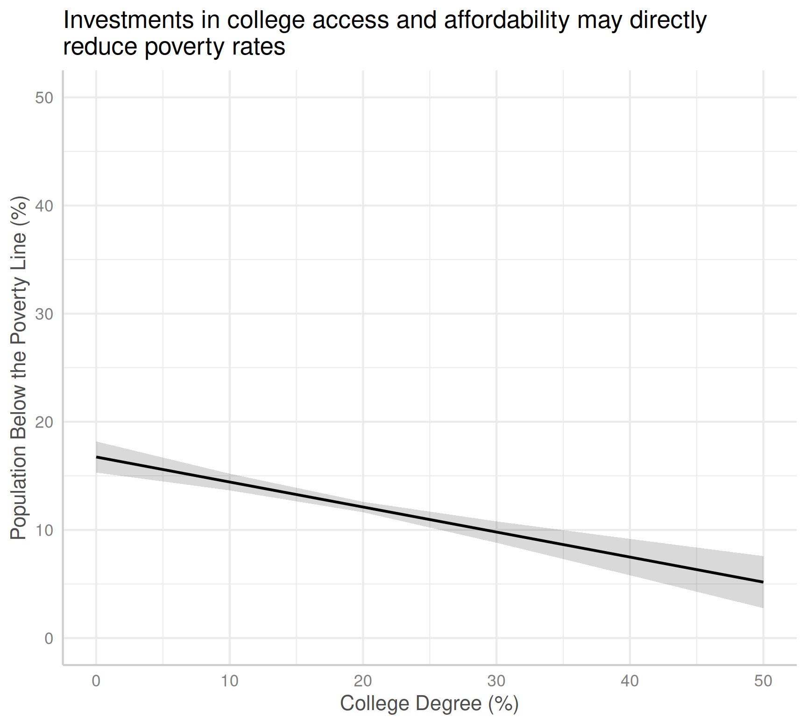
Global Life Expectancy
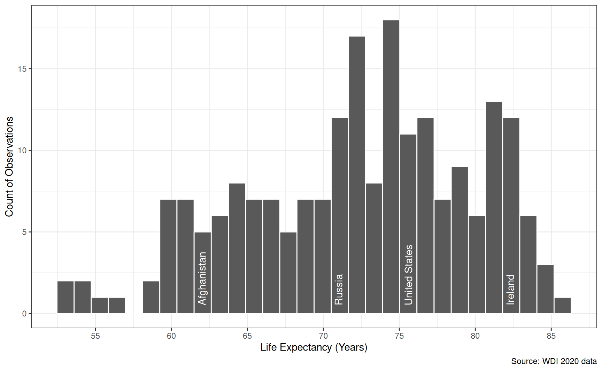
Regress life expectancy on…
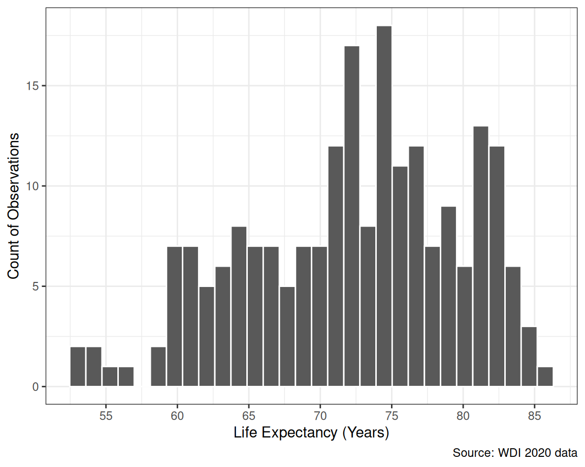
fertility_rate_per_woman
compulsory_education_yrs
unemployment_pct
Task: Fit, interpret and evaluate each model
| Life Expectancy | |
|---|---|
| (Intercept) | 84.72* |
| (0.65) | |
| Fertility (births per woman) | -4.89* |
| (0.23) | |
| Num.Obs. | 209 |
| R2 | 0.691 |
| R2 Adj. | 0.689 |
| RMSE | 4.15 |
| * p < 0.05 | |
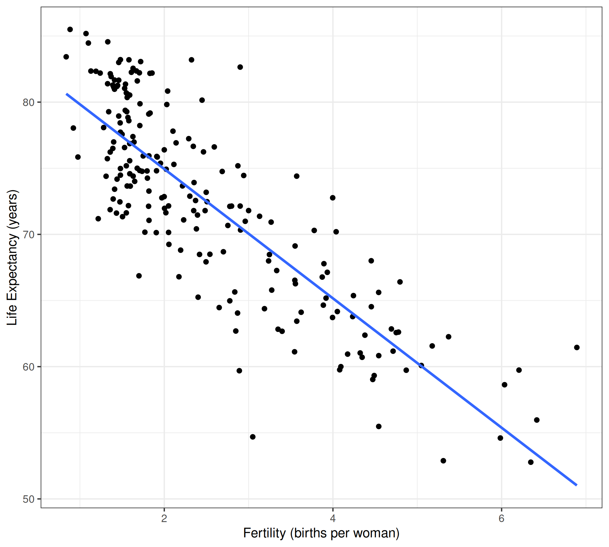
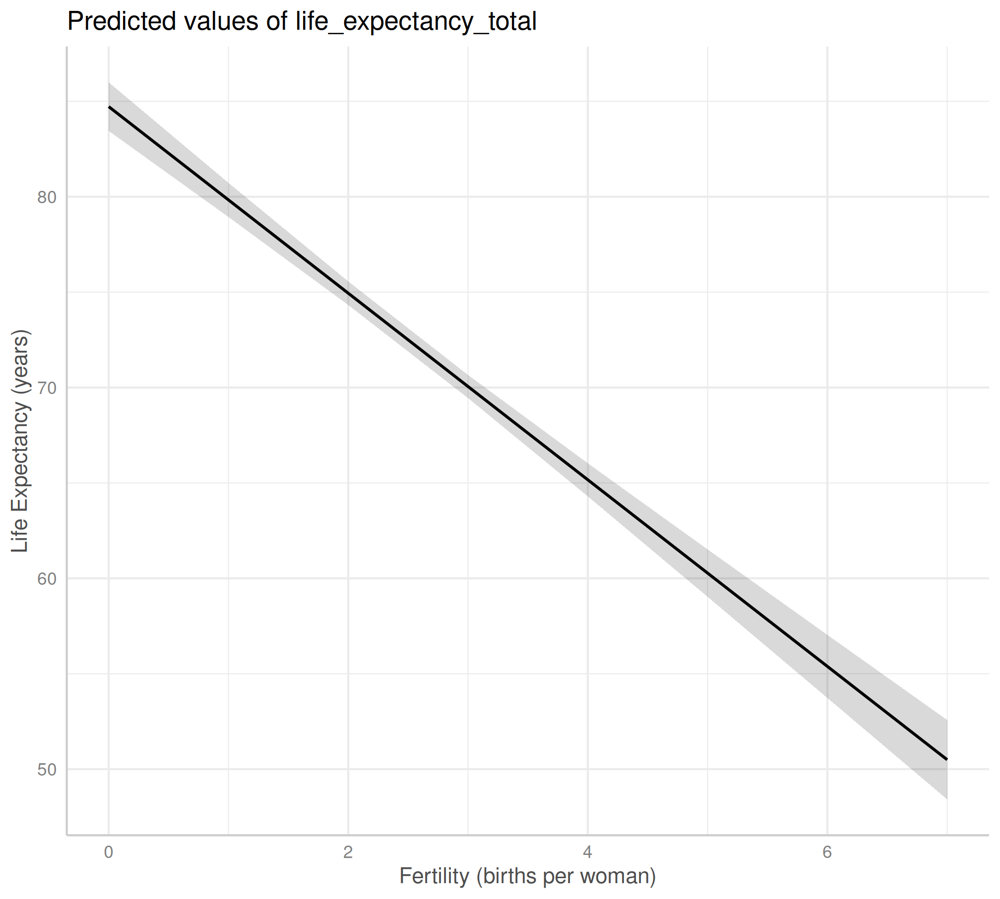
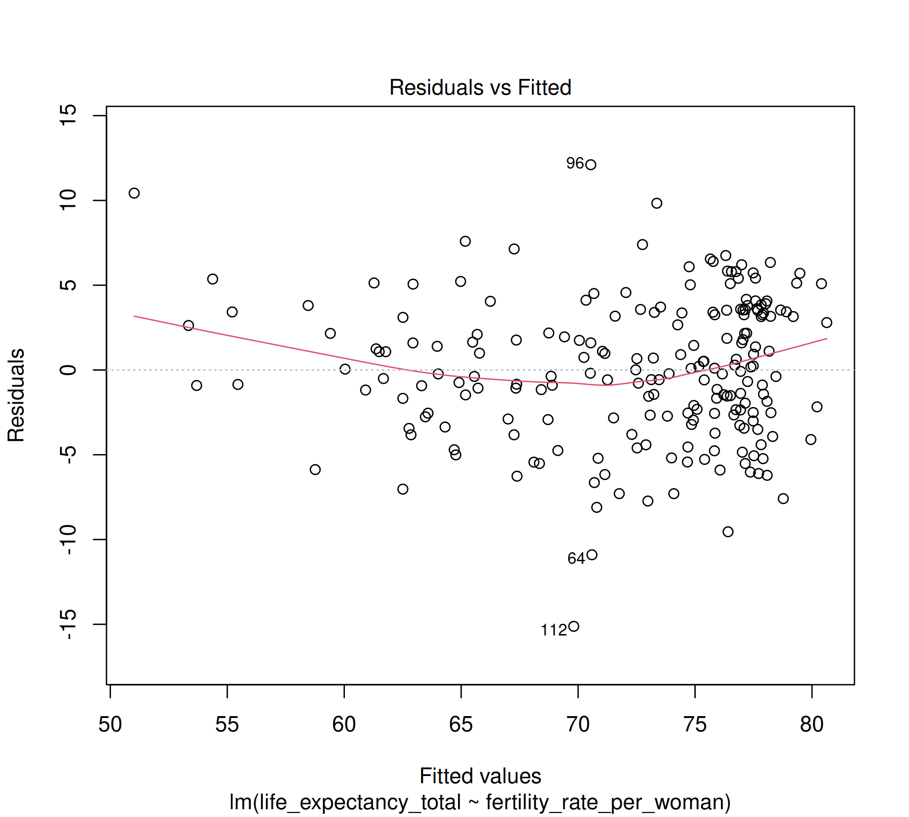
| Life Expectancy | |
|---|---|
| (Intercept) | 65.31* |
| (2.03) | |
| Compulsory Education (years) | 0.72* |
| (0.20) | |
| Num.Obs. | 192 |
| R2 | 0.065 |
| R2 Adj. | 0.060 |
| RMSE | 7.16 |
| * p < 0.05 | |


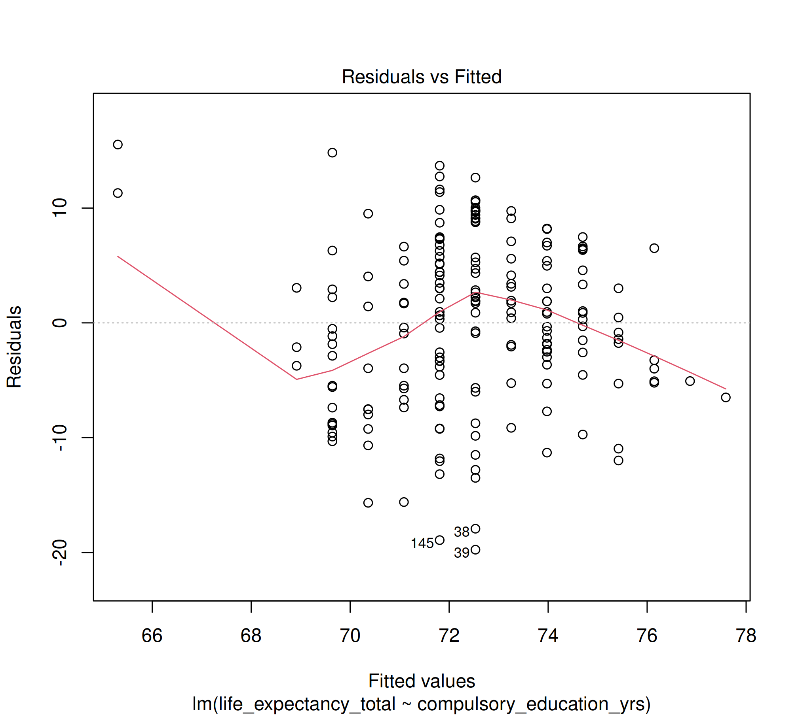
| Life Expectancy | |
|---|---|
| (Intercept) | 73.02* |
| (0.97) | |
| Unemployment Rate (%) | -0.12 |
| (0.10) | |
| Num.Obs. | 187 |
| R2 | 0.008 |
| R2 Adj. | 0.003 |
| RMSE | 7.55 |
| * p < 0.05 | |
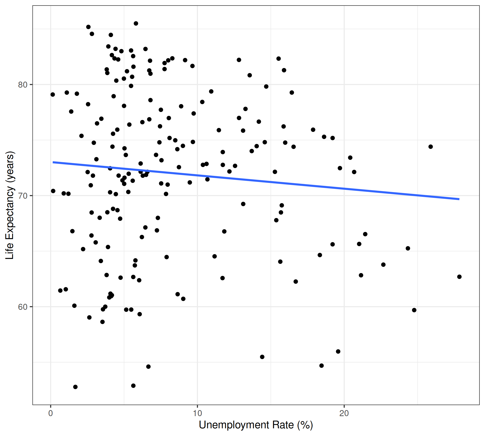
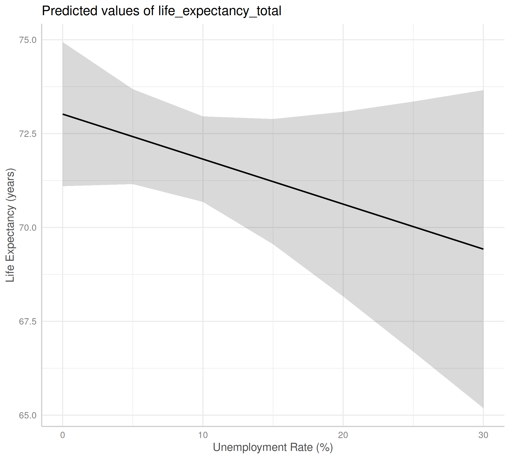
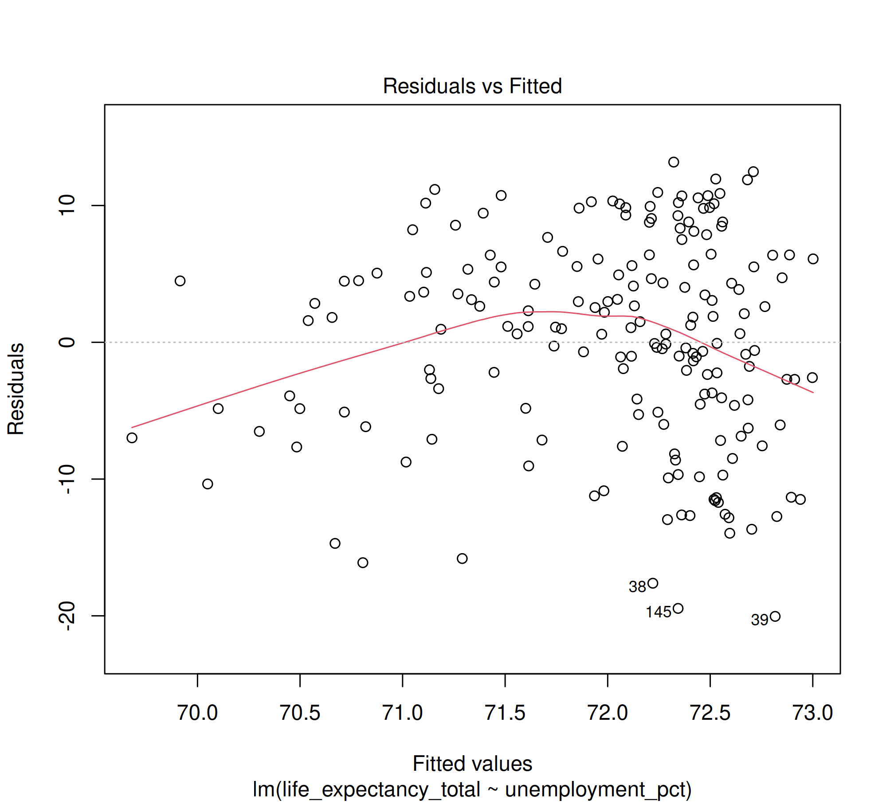
Models of Global Life Expectancy
| (1) | (2) | (3) | |
|---|---|---|---|
| (Intercept) | 84.72* | 65.31* | 73.02* |
| (0.65) | (2.03) | (0.97) | |
| Fertility (births per woman) | -4.89* | ||
| (0.23) | |||
| Compulsory Education (years) | 0.72* | ||
| (0.20) | |||
| Unemployment Rate (%) | -0.12 | ||
| (0.10) | |||
| Num.Obs. | 209 | 192 | 187 |
| R2 | 0.691 | 0.065 | 0.008 |
| R2 Adj. | 0.689 | 0.060 | 0.003 |
| RMSE | 4.15 | 7.16 | 7.55 |
| * p < 0.05 | |||